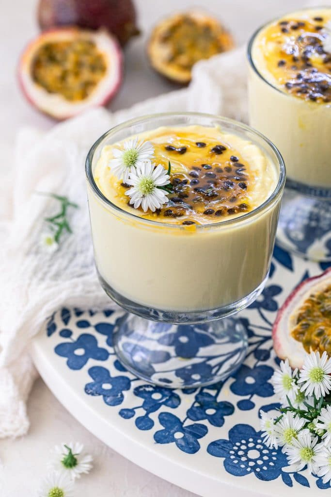

Passion Fruit Mousse

Delicious Passion Fruit Mousse!
This recipe is for Passion Fruit Mousse. It will take approx. 5 minutes to prepare, and an extra 3 hours to chill and finish
Ingredients:
- 2 teaspoons (8g) unflavored gelatin
- 3 tablespoons water
- 1 ⅓ cups (290g) heavy cream, cold
- 1 can (397g) sweetened condensed milk
- 1 cup (265g) passion fruit pulp or unsweetened juice concentrate
For the topping:
- Pulp of two fresh passion fruits with seeds (about ⅓ cup)
- ¼ cup sugar
Instructions:
Making the passion fruit mousse:
- Mix the gelatin and water in a small bowl, until the gelatin is hydrated. Microwave for 30 seconds (or heat on a double boiler) for the gelatin to melt. Cool slightly before using.
- Combine the heavy cream, sweetened condensed milk, passion fruit pulp and melted gelatin in the blender. Blend for 5 minutes.
- Transfer the mousse to a large serving bowl or to 4 individual glasses. Refrigerate for at least 3 hours to set.
- Top with the passion fruit sauce and serve!
Making the topping:
- Combine the fresh passion fruit pulp and the sugar in a saucepan. Cook, over medium low heat, until the sugar dissolves and the mixture starts boiling. Lower the heat and continue cooking for another minute or two, or until it thickens slightly.
- Let the sauce cool to room temperature before using or refrigerating to use later.